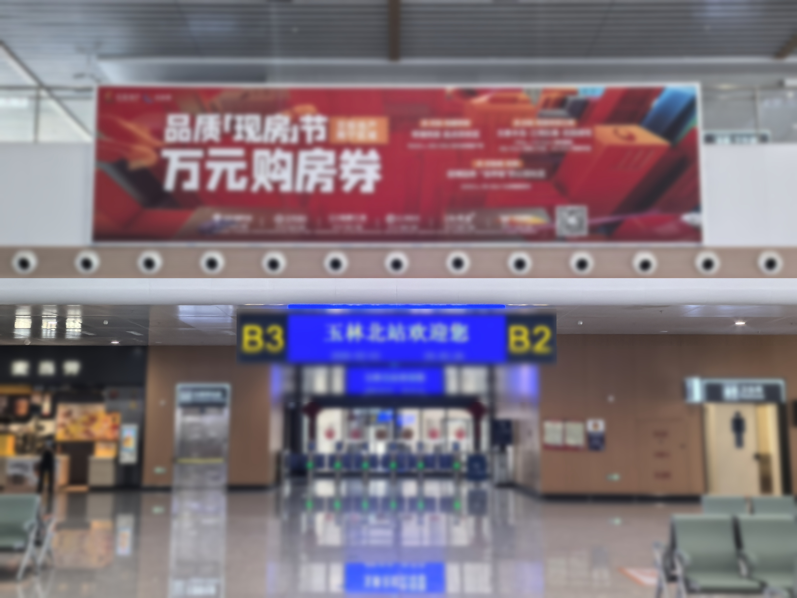

近两年有一个很火的趋势："百城万屏"生日应援——粉丝们集资在全国各大城市的地标LED大屏上为偶像投放生日祝福，从商场外墙到高铁站大屏，"霸屏"已经成为粉丝文化的一部分。
而你或许不知道的是：在广西玉林，同样有一块可以做到这一切的巨幕——玉林北站候车厅152㎡全彩LED大屏。

这块屏有多大？
先说几个数字给你直观感受——玉林北站候车厅LED大屏：
- 尺寸：19.86米宽 × 7.68米高 = 152.52平方米
- 位置：候车厅正中央，所有进站旅客必经之处
- 日均人流量：约1.5-2万人次（且持续增长中）
- 播放时段：全天候运行，15秒/次，每日超150次轮播
152平米是什么概念？相当于两个标准羽毛球场并排的大小。在玉林所有户外广告媒体中，这是最大的动态展示屏，没有之一。
这块屏能干什么？——三大场景全解析
🎂 场景一：明星生日应援 / 粉丝团祝福
谁在用？全国各地粉丝后援会、微博超话粉丝团
做什么？在偶像生日当天，把祝福语+写真+应援口号投上152㎡巨幕，配合粉丝现场打卡拍照，社交媒体二次传播
为什么投高铁站？相比商圈大屏，高铁站的受众更多元——不仅有特意来打卡的粉丝，还有全国各地经过的旅客。"在广西最大高铁屏上看到我爱豆的生日应援"本身就是一种社交货币。
效果加成：旅客拍照→发朋友圈/微博/小红书→二次扩散。一个人拍照，几百人看见。
🏢 场景二：企业庆典 / 重大事件祝贺
谁在用？本地企业、商会、政府机构
做什么？公司周年庆、新店开业、项目奠基、合作伙伴致贺——用152㎡巨幕宣告全城
为什么投这里？高铁站是城市的"会客厅"。外地客商、政府领导、合作伙伴从高铁站出来第一眼就可能看到你的品牌展示——这是最体面的"城市级仪式感"。
典型案例：企业五周年、楼盘开盘、开工大吉、致敬客户——一条15秒动态视频，胜过发100条朋友圈。
📢 场景三：品牌创意展示 / 新品发布
谁在用？消费品牌、科技企业、本地连锁
做什么？新品首发倒计时、品牌年度大片首映、节点营销活动预告
为什么投这里？大屏的动态表现力远超静态灯箱。15秒时间可以做动画、特效、字幕叠加——品牌调性直接拉满。
节点价更优：春节、三月三、东盟博览会、国庆——这些节点高铁客流爆发，是品牌曝光的黄金窗口。
为什么是现在？三个时机信号
信号一：粉丝应援预算持续增长。根据行业观察，"百城万屏"应援模式已从一线城市下沉到二三四线城市。玉林作为桂东南中心城市，本地粉丝团和周边城市后援会的应援需求正在释放——但目前玉林市场上几乎没有同级别的大屏可以承接。
信号二：企业品牌意识觉醒。越来越多的广西本土企业意识到，高铁站不是一个"打广告"的地方，而是一个"做品牌"的舞台。LED大屏的视觉冲击力和场景仪式感，是所有其他媒体形式无法替代的。
信号三：社交传播附加值被低估。线下大屏的价值不仅是"被路过的人看到"，更重要的是"被看到的人拍下来发到网上"。高铁站的旅客来自全国各地——一条15秒视频从玉林北站LED屏出发，可能被分享到微博、朋友圈、小红书上，触达远超日均客流的人群。
投放指南：怎么用最划算？
- 粉丝应援：提前至少1个月预约档期（尤其是热门偶像的生日节点容易撞期），建议在偶像生日前3天开始投放、累计7天效果最好
- 企业庆典：可配合站内其他媒体组合使用——LED大屏打主力+出站通道灯箱做辅助，形成"进站看到→出站又看到"的闭环
- 品牌展示：15秒动态视频的效果远超静态画面，建议找专业团队制作动态素材（我们可推荐合作方）
- 联合投放：多个企业/粉丝团联合拼时段，分担成本但共享曝光，适合预算有限的小企业和学生粉丝团
价格参考
玉林北站候车厅LED大屏刊例价：15万元/月（15秒/次，每日150次轮播），短期投放可按天/周协商。相比一线城市同规格LED屏（通常30-80万/月），玉林北站的性价比优势非常明显。
对于粉丝应援和企业短期祝贺需求，按周起投的灵活方案可以让预算友好的品牌和小团体也能享受巨幕级别的曝光效果。